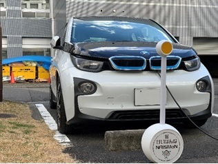

私たちの研究室では、ソフトウェア開発プロジェクトを持続可能とすることを目指し、実証的手法（エンピリカルアプローチ）により、より良いソフトウェア開発方法を探究し、 ツールやシステムを開発しています。
ソフトウェアは一度作って終わりではなく、環境やユーザなどに合わせて開発し続ける必要があります。 しかし、ソフトウェアに関する資産は複雑に依存し、開発に携わる人材は流動的で、 ソフトウェアを持続可能な状況で開発し続けることは大きな挑戦です。この課題に対して、 ソフトウェアにおける大規模なデータを活用した新しいソフトウェアメンテナンス技術の開発を行っています。
多様なソフトウェア資産や人材を含むソフトウェアエコシステムに対する大規模なデータを活用した 新しいソフトウェアメンテナンス技術を開発するとともに、エコシステムで人々が協調する仕組み作りとしての 乗り捨て可能カーシェアリング研究にも力を入れて取り組んでいます。
研究室内の雰囲気は非常に和やかで、学生同士毎日楽しく過ごしています。研究室内にはアウトドア家具やyogiboなどが 設置されており、リラックスできる空間が広がってます。また、自由な研究体制も非常に魅力的な部分です。
在学中にインターンシップなどで実際のソフトウェア開発を体験することを推奨します。 大学院に進学すると、国内外の企業などへの派遣も実施し、チームワークができ、研究のできるソフトウェア技術者に なることを目標としています。